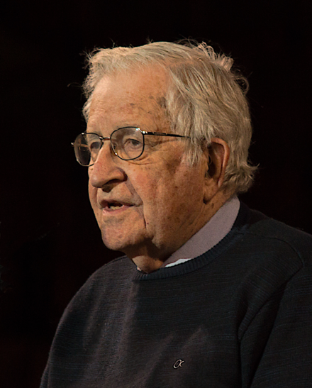

Noam Chomsky

Why I love Noam Chomsky
Noam Chomsky is one of my favorite living academics and philosopers.
His work on linguistics, political theory and media studies have propelled
him to the top echelon of writers of political thought.
Chomsky has written over 150 books on the topics of
various subjects
He is a prolific thinker in the Libertarian Socialist tradtition
A political activist, he is anti-war and pro-working-class.
Noam Chomsky